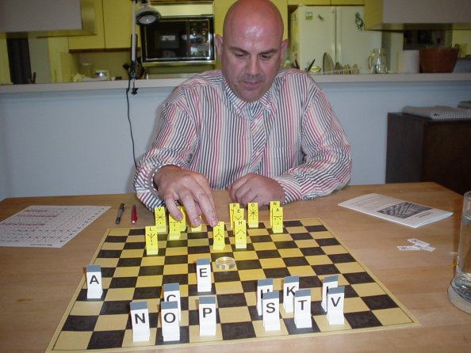
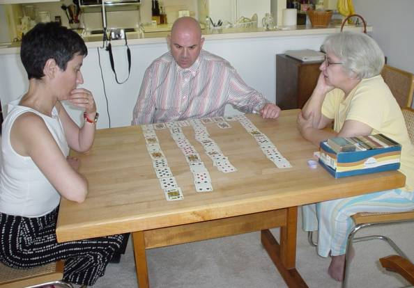

|
On August 10, 2005, we had visitors from Barcelona—Oriol Comas i Coma and his girlfriend Anna Díaz. Oriol is a writer and a game inventor (the Gaudi Tile Game is among his creations). His latest book is a collection of games, and it includes my game Eleusis. There is both a Spanish edition of the book, El mondo en juegos, and a Catalan edition, El món en jocs. The picture at the right shows Oriol giving me the Spanish edition. I had really wanted the Catalan edition (because I’ve heard so much about Catalonia), but that edition was sold out. Of course, it doesn’t really matter, because I can’t read anything but English anyway.
Besides writing a book of games, Oriol recently put together an exhibit about games for the Toy Museum of Catalonia in Figueres, Catalonia. It included a picture frame with cards showing a layout from Eleusis. Oriol was also writing an article about me and my games for the French magazine Jeux sur un Plateau. That article appeared in the February, 2006 issue, and it contained an interesting interview Oriol conducted with me. Here is the original English version of the interview. |


|
That’s Anna on the left, Oriol in the center, and my wife Ann on the right. Oriol has set up an Eleusis layout and the rest of us are trying to figure out the rule that would produce this layout. We never actually played the game. Instead, one person would set up a layout and the others would guess the rule.
Back to Robert Abbott’s Games |